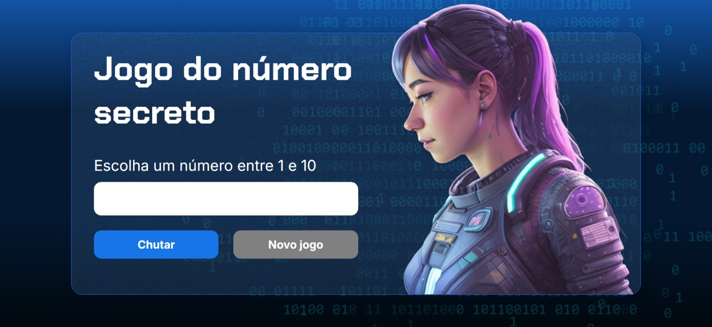
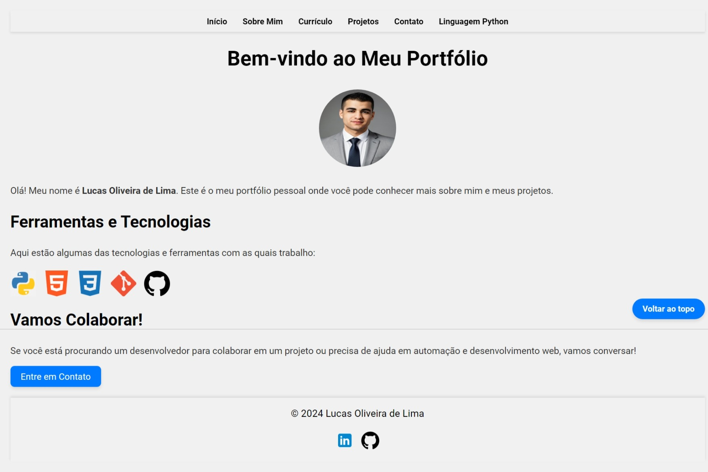

O Jogo do Número Secreto é um projeto que criei para colocar em prática minhas habilidades em programação e, ao mesmo tempo, oferecer uma experiência divertida e interativa para os usuários. A ideia do jogo é simples: o sistema escolhe um número aleatório, e o jogador tenta adivinhar qual é, recebendo dicas se o número está acima ou abaixo da resposta correta. Esse processo torna o jogo envolvente e desafiador, incentivando o raciocínio lógico. Durante o desenvolvimento, pude explorar conceitos importantes, como a geração de números aleatórios e a validação de entradas do usuário, além de aprender a criar uma interação fluida e intuitiva. Este projeto representa minha dedicação ao aprendizado constante e minha vontade de transformar ideias simples em soluções que fazem a diferença.
Este portfólio foi criado com o objetivo de apresentar de forma clara e acessível as minhas habilidades, experiências e projetos. A estrutura foi desenvolvida com HTML, garantindo que cada seção seja organizada e fácil de navegar. Com o uso de CSS, o design ganhou vida, trazendo detalhes como bordas arredondadas, sombras suaves e transições que deixam a experiência mais agradável e moderna. Além de ser responsivo, permitindo uma navegação consistente em diferentes dispositivos, o site também cumpre funções básicas essenciais, como destacar projetos recentes, compartilhar informações sobre minha trajetória e facilitar o contato com potenciais colaboradores ou empregadores. Este trabalho reflete meu compromisso com a simplicidade, eficiência e a busca por criar soluções que sejam funcionais e visualmente atraentes, mesmo com recursos básicos.
